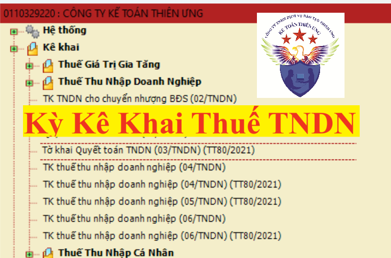

Khai thuế thu nhập doanh nghiệp là loại khai quyết toán năm và quyết toán đến thời điểm giải thể, phá sản, chấm dứt hoạt động, chấm dứt hợp đồng hoặc tổ chức lại doanh nghiệp hoặc khai từng lần phát sinh
1. Tạm tính thuế TNDN quý:
Hiện nay, Doanh nghiệp không phải nộp hồ sơ khai thuế TNDN theo quý nữa (Tức là không phải làm tờ khai thuế TNDN tạm tính quý) (Quy định này là theo điều 17 của thông tư 151/2014/TT-BTC có hiệu lực từ quý 4/2014 trở đi)
Khai quyết toán năm và quyết toán đến thời điểm giải thể, phá sản, chấm dứt hoạt động, chấm dứt hợp đồng hoặc tổ chức lại doanh nghiệp:
Hiện nay, Doanh nghiệp không phải nộp hồ sơ khai thuế TNDN theo quý nữa (Tức là không phải làm tờ khai thuế TNDN tạm tính quý) (Quy định này là theo điều 17 của thông tư 151/2014/TT-BTC có hiệu lực từ quý 4/2014 trở đi)

=> Nhưng hàng quý doanh nghiệp phải thực hiện tạm tính để xác định số thuế thuế TNDN tạm nộp theo quý
Theo quy định tại điểm b, Khoản 6, Điều 8, Nghị định 126/2020/NĐ-CP thì:
Doanh nghiệp phải tự xác định số thuế thu nhập doanh nghiệp tạm nộp quý và được trừ số thuế đã tạm nộp với số phải nộp theo quyết toán thuế năm.
Theo Điểm b Khoản 6 Điều 8 Nghị định số 126/2020/NĐ-CP thì:Doanh nghiệp phải tự xác định số thuế thu nhập doanh nghiệp tạm nộp quý và được trừ số thuế đã tạm nộp với số phải nộp theo quyết toán thuế năm.
Khai quyết toán năm và quyết toán đến thời điểm giải thể, phá sản, chấm dứt hoạt động, chấm dứt hợp đồng hoặc tổ chức lại doanh nghiệp:
Người nộp thuế (trừ thuế thu nhập doanh nghiệp từ chuyển nhượng vốn của nhà thầu nước ngoài; thuế thu nhập doanh nghiệp kê khai theo phương pháp tỷ lệ trên doanh thu theo từng lần phát sinh hoặc theo tháng) khai quyết toán năm và quyết toán đến thời điểm giải thể, phá sản, chấm dứt hoạt động, chấm dứt hợp đồng hoặc tổ chức lại doanh nghiệp. Trường hợp chuyển đổi loại hình doanh nghiệp (không bao gồm doanh nghiệp nhà nước cổ phần hóa) mà doanh nghiệp chuyển đổi kế thừa toàn bộ nghĩa vụ về thuế của doanh nghiệp được chuyển đổi thì không phải khai quyết toán thuế đến thời điểm có quyết định về việc chuyển đổi doanh nghiệp, doanh nghiệp khai quyết toán khi kết thúc năm.
Người nộp thuế phải tự xác định số thuế thu nhập doanh nghiệp tạm nộp quý (bao gồm cả tạm phân bổ số thuế thu nhập doanh nghiệp cho địa bàn cấp tỉnh nơi có đơn vị phụ thuộc, địa điểm kinh doanh, nơi có bất động sản chuyển nhượng khác với nơi người nộp thuế đóng trụ sở chính) và được trừ số thuế đã tạm nộp với số phải nộp theo quyết toán thuế năm.
Người nộp thuế thuộc diện lập báo cáo tài chính quý theo quy định của pháp luật về kế toán căn cứ vào báo cáo tài chính quý và các quy định của pháp luật về thuế để xác định số thuế thu nhập doanh nghiệp tạm nộp quý.
Người nộp thuế không thuộc diện lập báo cáo tài chính quý theo quy định của pháp luật về kế toán căn cứ vào kết quả sản xuất, kinh doanh quý và các quy định của pháp luật về thuế để xác định số thuế thu nhập doanh nghiệp tạm nộp quý.
Tổng số thuế thu nhập doanh nghiệp đã tạm nộp của 03 quý đầu năm tính thuế không được thấp hơn 75% số thuế thu nhập doanh nghiệp phải nộp theo quyết toán năm. Trường hợp người nộp thuế nộp thiếu so với số thuế phải tạm nộp 03 quý đầu năm thì phải nộp tiền chậm nộp tính trên số thuế nộp thiếu kể từ ngày tiếp sau ngày cuối cùng của thời hạn tạm nộp thuế thu nhập doanh nghiệp quý 03 đến ngày nộp số thuế còn thiếu vào ngân sách nhà nước.
Người nộp thuế có thực hiện dự án đầu tư cơ sở hạ tầng, nhà để chuyển nhượng hoặc cho thuê mua, có thu tiền ứng trước của khách hàng theo tiến độ phù hợp với quy định của pháp luật thì thực hiện tạm nộp thuế thu nhập doanh nghiệp theo quý theo tỷ lệ 1% trên số tiền thu được. Trường hợp chưa bàn giao cơ sở hạ tầng, nhà và chưa tính vào doanh thu tính thuế thu nhập doanh nghiệp trong năm thì người nộp thuế không tổng hợp vào hồ sơ khai quyết toán thuế thu nhập doanh nghiệp năm mà tổng hợp vào hồ sơ khai quyết toán thuế thu nhập doanh nghiệp khi bàn giao bất động sản đối với từng phần hoặc toàn bộ dự án.
3. Khai theo từng lần phát sinh:
3.1) Người nộp thuế thu nhập doanh nghiệp tính thuế theo phương pháp tỷ lệ % trên doanh thu bán hàng hóa dịch vụ theo quy định của pháp luật về thuế thu nhập doanh nghiệp có phát sinh thu nhập từ hoạt động chuyển nhượng bất động sản, thuế thu nhập doanh nghiệp từ hoạt động bán toàn bộ Công ty TNHH một thành viên do tổ chức làm chủ sở hữu dưới hình thức chuyển nhượng vốn có gắn với bất động sản.
(Điểm e Khoản 4 Điều 8 Nghị định số 126/2020/NĐ-CP)
3.2) Người nộp thuế thu nhập doanh nghiệp tính thuế theo phương pháp tỷ lệ % trên doanh thu bán hàng hóa dịch vụ theo quy định của pháp luật về thuế thu nhập doanh nghiệp không phát sinh thường xuyên.
(Điểm đ Khoản 4 Điều 8 Nghị định số 126/2020/NĐ-CP)
3.3) Tổ chức, cá nhân nhận chuyển nhượng vốn từ nhà thầu nước ngoài; Tổ chức thành lập theo pháp luật Việt Nam nơi nhà thầu nước ngoài đầu tư vốn khai thay nếu tổ chức, cá nhân nhận chuyển nhượng vốn cũng là nhà thầu nước ngoài khai thay thuế thu nhập doanh nghiệp đối với hoạt động chuyển nhượng vốn của nhà thầu nước ngoài.
(Điểm o Khoản 4 Điều 8 Nghị định số 126/2020/NĐ-CP)
4. Thời hạn nộp hồ sơ khai thuế TNDN:
Theo quy định tại Điểm a Khoản 2, Khoản 3 và Khoản 4 Điều 44 Luật Quản lý thuế thì:
a) Thời hạn nộp hồ sơ khai thuế theo từng lần phát sinh nghĩa vụ thuế: Chậm nhất là ngày thứ 10 kể từ ngày phát sinh nghĩa vụ thuế.
b) Thời hạn tạm nộp thuế theo quý: Chậm nhất là ngày 30 của tháng đầu quý sau.
c) Thời hạn nộp hồ sơ khai quyết toán thuế năm: Chậm nhất là ngày cuối cùng của tháng thứ 3 kể từ ngày kết thúc năm dương lịch hoặc năm tài chính.
d) Đối với hồ sơ quyết toán đến thời điểm giải thể, phá sản, chấm dứt hoạt động, chấm dứt hợp đồng hoặc tổ chức lại doanh nghiệp (trừ trường hợp chuyển đổi loại hình doanh nghiệp không bao gồm doanh nghiệp nhà nước cổ phần hóa mà doanh nghiệp chuyển đổi kế thừa toàn bộ nghĩa vụ về thuế của doanh nghiệp được chuyển đổi): Chậm nhất là ngày thứ 45 (bốn mươi lăm), kể từ ngày có quyết định giải thể, phá sản, chấm dứt hoạt động hoặc tổ chức lại doanh nghiệp.